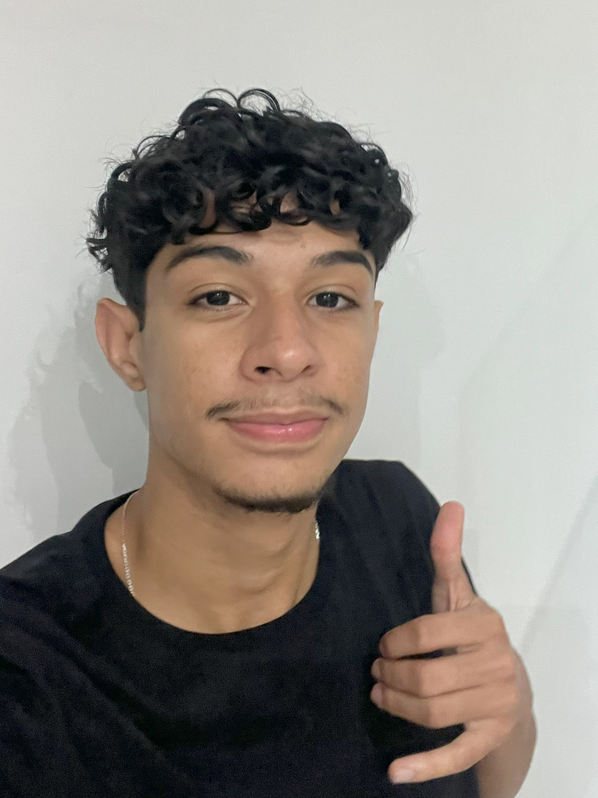

Lucas Gabriel Borges Silva
Este site foi desenvolvido por Lucas Gabriel Borges Silva, aluno do 3º ano do curso Técnico em Informática integrado ao Ensino Médio no IFTO - Campus Paraíso do Tocantins, como parte da disciplina diversificada Preparathon: Preparatório para Maratonas Tecnológicas e Inovação.
O projeto nasceu da paixão por animais e da vontade de criar uma solução tecnológica para um problema social.
Nossa Missão
O "Me Leve Para Casa" tem como objetivo facilitar a adoção de animais abandonados, conectando pessoas dispostas a ajudar com animais que precisam de um lar cheio de amor e cuidado.